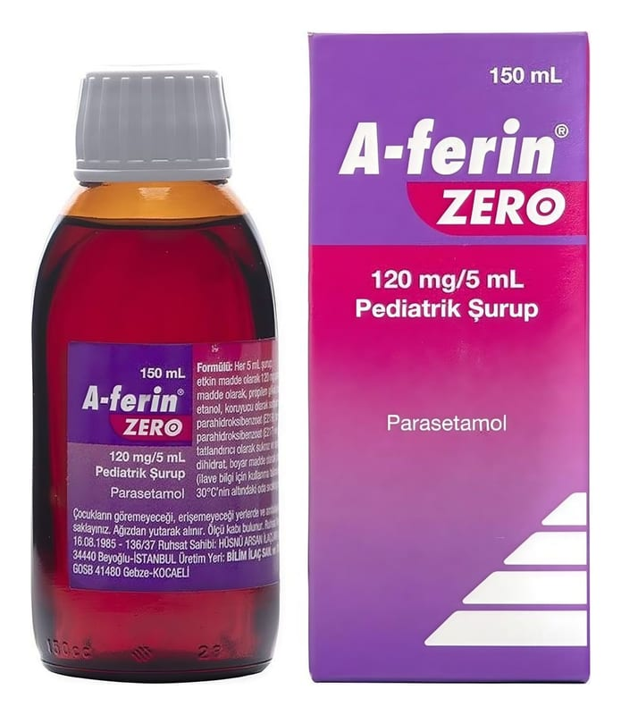

A-Ferin Zero 120 mg/5 ml Pediatrik Şurup, 150 ml

Ne için kullanılır
KT · Bölüm 1A-FERİN ZERO, şurup (kırmızı renkli, berrak vişne kokulu) şeklinde, her bir ölçeğinde (her 5 mL’de) 120 mg parasetamol içeren, ağrı kesici ve ateş düşürücü olarak etki gösteren bir ilaçtır.
A-FERİN ZERO 150 mL’lik şişede sunulmaktadır.
A-FERİN ZERO çocuklarda, hafif ve orta şiddetli ağrılar ile ateşin semptomatik (hastalığı tedavi edici değil, belirtilerini giderici) tedavisinde kullanılır.